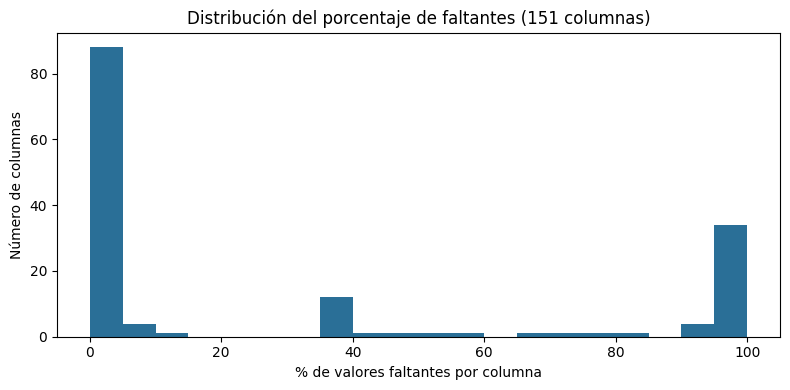
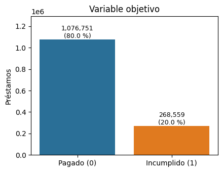
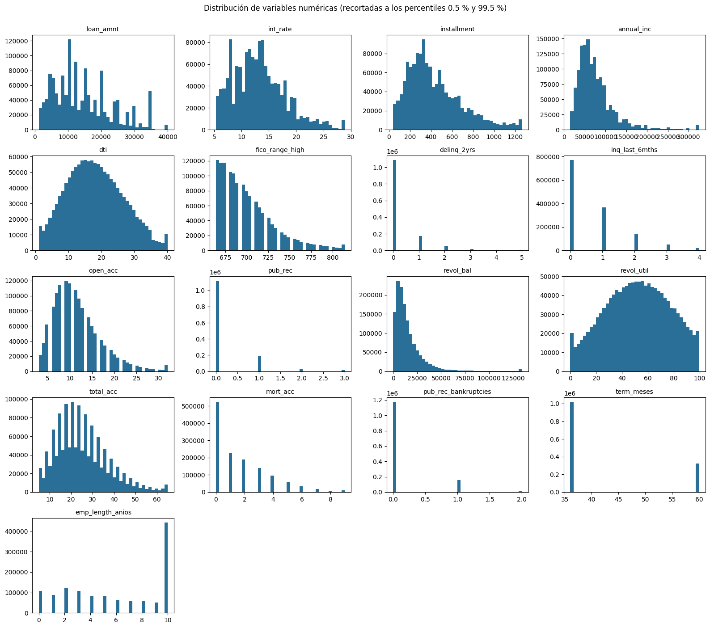
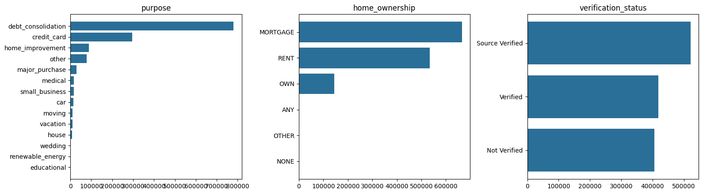
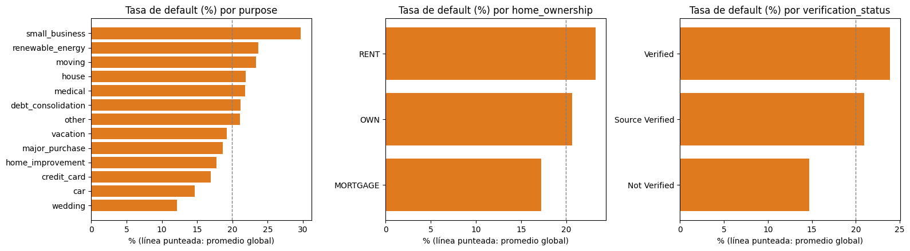
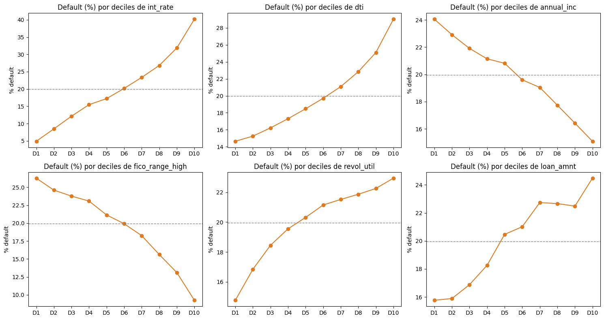
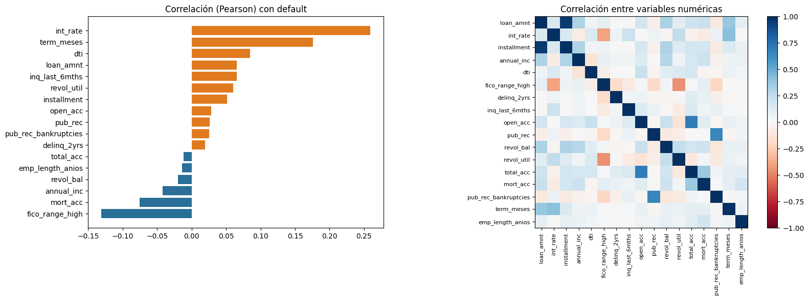
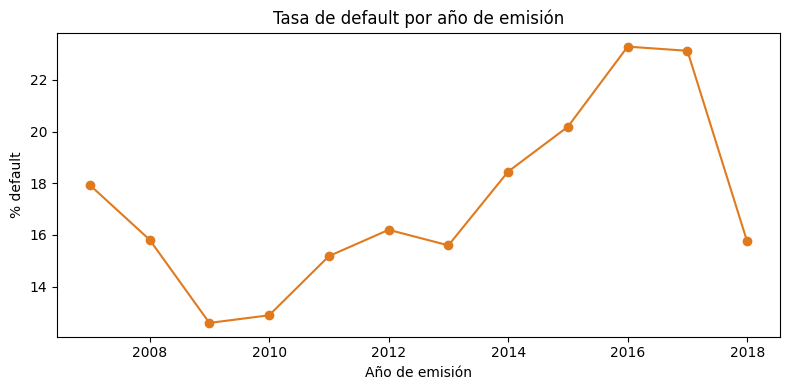

Paso 6 · Análisis exploratorio de datos (EDA)#
Objetivo: entender el dataset de Lending Club antes de interpretar los modelos: calidad de los datos, distribución de las variables, y cómo se relacionan con el incumplimiento (default).
Contenido: (1) carga, (2) valores faltantes, (3) variable objetivo, (4) análisis univariado, (5) análisis bivariado, (6) resumen ejecutivo.
Se explora el conjunto completo de préstamos cerrados (Fully Paid + Charged Off). Para evitar fuga de información, las decisiones de preprocesamiento del modelado se tomaron solo con train; aquí se describe el panorama general sin ajustar nada.
1. Carga#
import os, glob, time
import numpy as np, pandas as pd
import matplotlib.pyplot as plt
try:
from google.colab import drive
drive.mount('/content/drive')
except ImportError:
pass
RUTA = '/content/drive/MyDrive/ML_LendingClub' # <- ajusta si tu carpeta se llama distinto
DIR_OUT = RUTA + '/resultados_eda'; os.makedirs(DIR_OUT, exist_ok=True)
candidatos = [f for f in glob.glob(RUTA + '/**/accepted_2007_to_2018Q4.csv', recursive=True) if os.path.isfile(f)]
if not candidatos:
candidatos = sorted(f for f in glob.glob(RUTA + '/*accepted*') if os.path.isfile(f))
archivo = candidatos[0]; print('Archivo:', archivo)
t0 = time.time()
bruto = pd.read_csv(archivo, low_memory=False)
print(f'Dataset completo: {bruto.shape[0]:,} filas x {bruto.shape[1]} columnas ({time.time()-t0:.0f} s)')
Mounted at /content/drive
Archivo: /content/drive/MyDrive/ML_LendingClub/accepted_2007_to_2018q4.csv/accepted_2007_to_2018Q4.csv
Dataset completo: 2,260,701 filas x 151 columnas (67 s)
2. Valores faltantes (todas las columnas del archivo original)#
nulos = (bruto.isna().mean() * 100).sort_values(ascending=False)
print('Columnas con >50 %% de faltantes: %d de %d' % ((nulos > 50).sum(), len(nulos)))
print('Columnas sin faltantes: %d' % (nulos == 0).sum())
fig, ax = plt.subplots(figsize=(8, 4))
ax.hist(nulos, bins=20, color='#2a6f97'); ax.set_xlabel('% de valores faltantes por columna'); ax.set_ylabel('Número de columnas')
ax.set_title('Distribución del porcentaje de faltantes (151 columnas)')
plt.tight_layout(); plt.savefig(DIR_OUT + '/faltantes_hist.png', dpi=150); plt.show()
nulos.head(15).round(1).to_frame('% faltante')
Columnas con >50 % de faltantes: 44 de 151
Columnas sin faltantes: 1

| % faltante | |
|---|---|
| member_id | 100.0 |
| orig_projected_additional_accrued_interest | 99.6 |
| hardship_reason | 99.5 |
| hardship_payoff_balance_amount | 99.5 |
| hardship_last_payment_amount | 99.5 |
| payment_plan_start_date | 99.5 |
| hardship_type | 99.5 |
| hardship_status | 99.5 |
| hardship_start_date | 99.5 |
| deferral_term | 99.5 |
| hardship_amount | 99.5 |
| hardship_dpd | 99.5 |
| hardship_loan_status | 99.5 |
| hardship_length | 99.5 |
| hardship_end_date | 99.5 |
3. Población de estudio y variable objetivo#
Solo los préstamos con desenlace conocido: Fully Paid (default=0) y Charged Off (default=1). Se excluyen los vigentes, en mora y los de la categoría Does not meet the credit policy, porque su desenlace final aún no se conoce o pertenecen a otra política. No es un muestreo: es la definición del problema.
print(bruto['loan_status'].value_counts().to_frame('n'))
df = bruto[bruto['loan_status'].isin(['Fully Paid', 'Charged Off'])].copy()
df['default'] = (df['loan_status'] == 'Charged Off').astype(int)
del bruto
print(f'\nPoblación de estudio: {len(df):,} préstamos | tasa de default: {df.default.mean()*100:.2f} %')
fig, ax = plt.subplots(figsize=(4.5, 3.5))
c = df['default'].value_counts().sort_index()
ax.bar(['Pagado (0)', 'Incumplido (1)'], c.values, color=['#2a6f97', '#e07a1f']); ax.set_ylabel('Préstamos')
for i, v in enumerate(c.values): ax.text(i, v, f'{v:,}\n({v/len(df)*100:.1f} %)', ha='center', va='bottom', fontsize=9)
ax.set_ylim(0, c.max() * 1.2); ax.set_title('Variable objetivo')
plt.tight_layout(); plt.savefig(DIR_OUT + '/objetivo.png', dpi=150); plt.show()
n
loan_status
Fully Paid 1076751
Current 878317
Charged Off 268559
Late (31-120 days) 21467
In Grace Period 8436
Late (16-30 days) 4349
Does not meet the credit policy. Status:Fully Paid 1988
Does not meet the credit policy. Status:Charged... 761
Default 40
Población de estudio: 1,345,310 préstamos | tasa de default: 19.96 %

4. Análisis univariado#
NUM = ['loan_amnt', 'int_rate', 'installment', 'annual_inc', 'dti', 'fico_range_high', 'delinq_2yrs',
'inq_last_6mths', 'open_acc', 'pub_rec', 'revol_bal', 'revol_util', 'total_acc', 'mort_acc', 'pub_rec_bankruptcies']
CAT = ['purpose', 'home_ownership', 'addr_state', 'verification_status']
df['term_meses'] = df['term'].str.extract(r'(\d+)')[0].astype(float)
df['emp_length_anios'] = df['emp_length'].str.extract(r'(\d+)')[0].astype(float)
df.loc[df['emp_length'] == '< 1 year', 'emp_length_anios'] = 0.0
NUMX = NUM + ['term_meses', 'emp_length_anios']
desc = df[NUMX].describe(percentiles=[.01, .25, .5, .75, .99]).T
desc['faltantes_%'] = df[NUMX].isna().mean() * 100
desc['asimetria'] = df[NUMX].skew()
desc.round(2)
| count | mean | std | min | 1% | 25% | 50% | 75% | 99% | max | faltantes_% | asimetria | |
|---|---|---|---|---|---|---|---|---|---|---|---|---|
| loan_amnt | 1345310.0 | 14419.97 | 8717.05 | 500.00 | 1500.00 | 8000.00 | 12000.00 | 20000.00 | 35000.00 | 40000.00 | 0.00 | 0.78 |
| int_rate | 1345310.0 | 13.24 | 4.77 | 5.31 | 5.32 | 9.75 | 12.74 | 15.99 | 26.30 | 30.99 | 0.00 | 0.71 |
| installment | 1345310.0 | 438.08 | 261.51 | 4.93 | 52.86 | 248.48 | 375.43 | 580.73 | 1221.50 | 1719.83 | 0.00 | 1.01 |
| annual_inc | 1345310.0 | 76247.64 | 69925.10 | 0.00 | 18000.00 | 45780.00 | 65000.00 | 90000.00 | 250000.00 | 10999200.00 | 0.00 | 46.32 |
| dti | 1344936.0 | 18.28 | 11.16 | -1.00 | 1.78 | 11.79 | 17.61 | 24.06 | 38.47 | 999.00 | 0.03 | 27.11 |
| fico_range_high | 1345310.0 | 700.19 | 31.85 | 629.00 | 664.00 | 674.00 | 694.00 | 714.00 | 804.00 | 850.00 | 0.00 | 1.29 |
| delinq_2yrs | 1345310.0 | 0.32 | 0.88 | 0.00 | 0.00 | 0.00 | 0.00 | 0.00 | 4.00 | 39.00 | 0.00 | 5.60 |
| inq_last_6mths | 1345309.0 | 0.66 | 0.94 | 0.00 | 0.00 | 0.00 | 0.00 | 1.00 | 4.00 | 8.00 | 0.00 | 1.70 |
| open_acc | 1345310.0 | 11.59 | 5.47 | 0.00 | 3.00 | 8.00 | 11.00 | 14.00 | 29.00 | 90.00 | 0.00 | 1.30 |
| pub_rec | 1345310.0 | 0.22 | 0.60 | 0.00 | 0.00 | 0.00 | 0.00 | 0.00 | 2.00 | 86.00 | 0.00 | 11.56 |
| revol_bal | 1345310.0 | 16248.11 | 22328.17 | 0.00 | 171.00 | 5943.00 | 11134.00 | 19755.75 | 94553.91 | 2904836.00 | 0.00 | 13.75 |
| revol_util | 1344453.0 | 51.81 | 24.52 | 0.00 | 1.10 | 33.40 | 52.20 | 70.70 | 98.20 | 892.30 | 0.06 | -0.04 |
| total_acc | 1345310.0 | 24.98 | 12.00 | 2.00 | 5.00 | 16.00 | 23.00 | 32.00 | 61.00 | 176.00 | 0.00 | 0.96 |
| mort_acc | 1298029.0 | 1.67 | 2.00 | 0.00 | 0.00 | 0.00 | 1.00 | 3.00 | 8.00 | 51.00 | 3.51 | 1.64 |
| pub_rec_bankruptcies | 1344613.0 | 0.13 | 0.38 | 0.00 | 0.00 | 0.00 | 0.00 | 0.00 | 1.00 | 12.00 | 0.05 | 3.44 |
| term_meses | 1345310.0 | 41.79 | 10.27 | 36.00 | 36.00 | 36.00 | 36.00 | 36.00 | 60.00 | 60.00 | 0.00 | 1.21 |
| emp_length_anios | 1266799.0 | 5.97 | 3.69 | 0.00 | 0.00 | 2.00 | 6.00 | 10.00 | 10.00 | 10.00 | 5.84 | -0.22 |
fig, axs = plt.subplots(5, 4, figsize=(16, 14)); axs = axs.ravel()
for a, c in zip(axs, NUMX):
x = df[c].dropna()
lo, hi = x.quantile([.005, .995])
a.hist(x.clip(lo, hi), bins=40, color='#2a6f97'); a.set_title(c, fontsize=10)
for a in axs[len(NUMX):]: a.axis('off')
plt.suptitle('Distribución de variables numéricas (recortadas a los percentiles 0.5 % y 99.5 %)', y=1.0)
plt.tight_layout(); plt.savefig(DIR_OUT + '/univariado_numericas.png', dpi=130); plt.show()

fig, axs = plt.subplots(1, 3, figsize=(16, 4.5))
for a, c in zip(axs, ['purpose', 'home_ownership', 'verification_status']):
v = df[c].fillna('Desconocido').value_counts()
a.barh(v.index[::-1], v.values[::-1], color='#2a6f97'); a.set_title(c)
plt.tight_layout(); plt.savefig(DIR_OUT + '/univariado_categoricas.png', dpi=130); plt.show()
print('addr_state: %d estados; los 5 más frecuentes:' % df['addr_state'].nunique())
print((df['addr_state'].value_counts(normalize=True).head(5) * 100).round(1).to_string())

addr_state: 51 estados; los 5 más frecuentes:
addr_state
CA 14.6
TX 8.2
NY 8.2
FL 7.1
IL 3.8
5. Análisis bivariado frente a default#
# 5.1 Tasa de default por categoría
fig, axs = plt.subplots(1, 3, figsize=(16, 4.5))
tasa_global = df['default'].mean() * 100
for a, c in zip(axs, ['purpose', 'home_ownership', 'verification_status']):
g = df.assign(**{c: df[c].fillna('Desconocido')}).groupby(c)['default'].agg(['mean', 'size'])
g = g[g['size'] >= 500].sort_values('mean')
a.barh(g.index, g['mean'] * 100, color='#e07a1f'); a.axvline(tasa_global, color='gray', ls='--', lw=1)
a.set_title(f'Tasa de default (%) por {c}'); a.set_xlabel('% (línea punteada: promedio global)')
plt.tight_layout(); plt.savefig(DIR_OUT + '/bivariado_categoricas.png', dpi=130); plt.show()

# 5.2 Tasa de default por deciles de las numéricas más relevantes
vars_dec = ['int_rate', 'dti', 'annual_inc', 'fico_range_high', 'revol_util', 'loan_amnt']
fig, axs = plt.subplots(2, 3, figsize=(15, 8)); axs = axs.ravel()
for a, c in zip(axs, vars_dec):
d = df[[c, 'default']].dropna()
q = pd.qcut(d[c], 10, duplicates='drop')
g = d.groupby(q, observed=True)['default'].mean() * 100
a.plot(range(len(g)), g.values, 'o-', color='#e07a1f'); a.set_xticks(range(len(g)))
a.set_xticklabels([f'D{i+1}' for i in range(len(g))]); a.axhline(tasa_global, color='gray', ls='--', lw=1)
a.set_title(f'Default (%) por deciles de {c}'); a.set_ylabel('% default')
plt.tight_layout(); plt.savefig(DIR_OUT + '/bivariado_deciles.png', dpi=130); plt.show()

# 5.3 Correlación con el objetivo y entre variables
corr_obj = df[NUMX + ['default']].corr(numeric_only=True)['default'].drop('default').sort_values()
fig, axs = plt.subplots(1, 2, figsize=(16, 6), gridspec_kw={'width_ratios': [1, 1.3]})
axs[0].barh(corr_obj.index, corr_obj.values, color=np.where(corr_obj.values > 0, '#e07a1f', '#2a6f97'))
axs[0].set_title('Correlación (Pearson) con default')
C = df[NUMX].corr(numeric_only=True)
im = axs[1].imshow(C.values, cmap='RdBu', vmin=-1, vmax=1)
axs[1].set_xticks(range(len(NUMX))); axs[1].set_xticklabels(NUMX, rotation=90, fontsize=8)
axs[1].set_yticks(range(len(NUMX))); axs[1].set_yticklabels(NUMX, fontsize=8); plt.colorbar(im, ax=axs[1], fraction=0.046)
axs[1].set_title('Correlación entre variables numéricas')
plt.tight_layout(); plt.savefig(DIR_OUT + '/correlaciones.png', dpi=130); plt.show()
corr_obj.round(3).to_frame('corr con default')

| corr con default | |
|---|---|
| fico_range_high | -0.131 |
| mort_acc | -0.075 |
| annual_inc | -0.042 |
| revol_bal | -0.020 |
| emp_length_anios | -0.014 |
| total_acc | -0.011 |
| delinq_2yrs | 0.019 |
| pub_rec_bankruptcies | 0.025 |
| pub_rec | 0.026 |
| open_acc | 0.028 |
| installment | 0.052 |
| revol_util | 0.060 |
| inq_last_6mths | 0.065 |
| loan_amnt | 0.066 |
| dti | 0.085 |
| term_meses | 0.176 |
| int_rate | 0.259 |
# 5.4 Evolución temporal (cuidado: los préstamos recientes tienen menos tiempo para incumplir)
df['anio'] = pd.to_datetime(df['issue_d'], format='%b-%Y', errors='coerce').dt.year
g = df.groupby('anio')['default'].agg(['mean', 'size'])
fig, ax = plt.subplots(figsize=(8, 4))
ax.plot(g.index, g['mean'] * 100, 'o-', color='#e07a1f'); ax.set_ylabel('% default'); ax.set_xlabel('Año de emisión')
ax.set_title('Tasa de default por año de emisión')
plt.tight_layout(); plt.savefig(DIR_OUT + '/default_por_anio.png', dpi=130); plt.show()
g.round(3)

| mean | size | |
|---|---|---|
| anio | ||
| 2007 | 0.179 | 251 |
| 2008 | 0.158 | 1562 |
| 2009 | 0.126 | 4716 |
| 2010 | 0.129 | 11536 |
| 2011 | 0.152 | 21721 |
| 2012 | 0.162 | 53367 |
| 2013 | 0.156 | 134804 |
| 2014 | 0.184 | 223102 |
| 2015 | 0.202 | 375545 |
| 2016 | 0.233 | 293095 |
| 2017 | 0.231 | 169300 |
| 2018 | 0.157 | 56311 |
6. Resumen ejecutivo (se calcula con los datos)#
tasa = df['default'].mean() * 100
top_corr = corr_obj.reindex(corr_obj.abs().sort_values(ascending=False).index).head(3)
faltantes_modelo = df[NUMX].isna().mean().sort_values(ascending=False).head(3) * 100
g_int = df.groupby(pd.qcut(df['int_rate'], 10, duplicates='drop'), observed=True)['default'].mean() * 100
g_term = df.groupby('term_meses')['default'].mean() * 100
print(f'''RESUMEN EJECUTIVO
- Población: {len(df):,} préstamos cerrados; tasa de default {tasa:.1f} % (clases desbalanceadas, ~1 de cada {1/df.default.mean():.0f}).
- Las tres variables numéricas más correlacionadas con el default: ''' + ', '.join(f'{k} ({v:+.2f})' for k, v in top_corr.items()) + f'''.
- Default por decil de tasa de interés: del decil más bajo ({g_int.iloc[0]:.1f} %) al más alto ({g_int.iloc[-1]:.1f} %).
- El plazo importa: default a 36 meses {g_term.get(36, float('nan')):.1f} %, a 60 meses {g_term.get(60, float('nan')):.1f} %.
- Variables del modelo con más faltantes: ''' + ', '.join(f'{k} ({v:.1f} %)' for k, v in faltantes_modelo.items()) + '''.
- Implicación para el modelado: con clases desbalanceadas conviene usar AUC / AUC-PR y no la exactitud,
que se vería inflada por la clase mayoritaria. (Interpreta aquí cuán fuertes son las relaciones a la luz de los resultados.)''')
RESUMEN EJECUTIVO
- Población: 1,345,310 préstamos cerrados; tasa de default 20.0 % (clases desbalanceadas, ~1 de cada 5).
- Las tres variables numéricas más correlacionadas con el default: int_rate (+0.26), term_meses (+0.18), fico_range_high (-0.13).
- Default por decil de tasa de interés: del decil más bajo (4.9 %) al más alto (40.2 %).
- El plazo importa: default a 36 meses 16.0 %, a 60 meses 32.4 %.
- Variables del modelo con más faltantes: emp_length_anios (5.8 %), mort_acc (3.5 %), revol_util (0.1 %).
- Implicación para el modelado: con clases desbalanceadas conviene usar AUC / AUC-PR y no la exactitud,
que se vería inflada por la clase mayoritaria. (Interpreta aquí cuán fuertes son las relaciones a la luz de los resultados.)